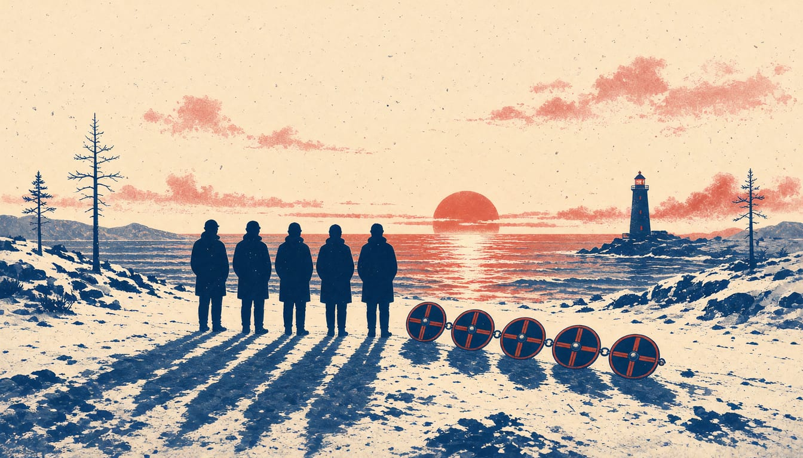

Nordic ministers to develop joint defence agreement as Sweden borrows SEK 300bn
The planned agreement would give Nordic defence cooperation a legal footing, while DN reports Sweden's record defence funding still falls short of Nato targets. From 1 January 2027, conscripts up to 47 can be called back for standby or war service.

The Nordic Defence Ministers agreed on 12 November 2026 to develop a Nordic Defence Cooperation Agreement, which will give their defence cooperation a legal framework. The agreement comes at a time when Sweden's defence is funded by heavy borrowing. Dagens Nyheter reported on 9 November that Sweden had borrowed 300 billion Swedish kronor for defence purposes.
Dagens Nyheter reported that Sweden's defence is receiving record-large additions of funding, yet still cannot meet Nato's capability targets. SEK 170 billion is about €15 billion at the ECB euro reference rate of 9 November.
Sweden widened the pool of people its armed forces can call on. On 4 November 2026, the Riksdag voted for the Government's proposal to strengthen personnel supply in the military defence, to strengthen resilience. Conscripts who have reached the upper age limit for military service, 47 years, will have continued duty of service. The continued duty applies if they are called up for standby duty or war service. The call-up must come before the end of the calendar year in which they turn 47. The number of standby duty days will also increase in the case of heightened alert.
The amendments will take force on 1 January 2027. The Army and Air Force do not reach them, as Dagens Nyheter reported earlier in November. The Government's Defence Preparedness Committee described the security policy situation as a heightened state of alert, skärpt läge, in its June 2026 interim report.
The Nordic ministers said European Allies are taking more responsibility for their own security, and the Nordic nations are ready to carry their part. What that part costs is measured in borrowed kronor: SEK 37.5 billion is about €3.4 billion.